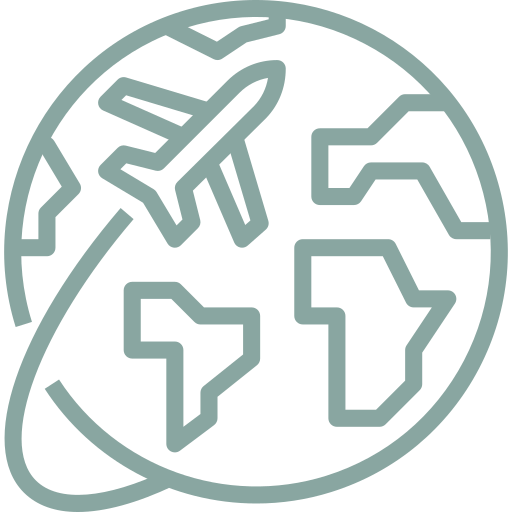

<section class="workDetail bio">
	<div class="workDetail-container">
		<div class="workDetail-main">
			<h1>Paula Guagliardi</h1>
			<p>I am a <strong>UX/UI Designer</strong> who enjoys translating insights from users into products that <strong>solve problems and improve people’s lives</strong>.</p>
			<p>I recently <strong>moved to Berlin</strong>, and I've been immersing myself in the <strong>UX and Startup community here</strong>. My goal is to <strong>keep specializing in product design</strong>, learn new methodologies, and apply them to coming technologies.</p>
			<p>I am looking to <strong>be part of a product that impacts many people</strong> in a meaningful way. With a broad view of UX, I like to work closely with a diverse team of professionals and <strong>participate in all phases of a product</strong>, from discovery to delivery to iteration. My love for HTML and CSS gives me tools to design, prototype, and have better discussions with my teammates.</p>
			<p>I am always pushing myself for improvement and value every opportunity to learn something new.</p>
			<div class="spaceVert"></div>
			<h2>.Background</h2>
			<p>I started my career <strong>fifteen years ago</strong> in Buenos Aires, after graduating as a web designer. I began working in <strong>digital advertising</strong>, where I learned about design, branding, and how to think and <strong>communicate concepts</strong>.</p>
			<p>I worked at various agencies with different structures and sizes where I <strong>learned different</strong> things.
				<ul>
					<li>In a small digital agency, I learned to <strong>wear different hats</strong> and to code everything I designed.</li>
					<li>In the bigger digital agency, I learned to work in a <strong>cross-functional team</strong>.</li>
					<li>In the traditional multinational agency, I learned how to integrate campaigns from <strong>other mediums into digital formats</strong>.</li>
					<li>In the global media network, I learned about <strong>strategy</strong> and how to <strong>lead</strong> projects.</li>
				</ul>

			</p>
			<p>Increasingly with every project, I realized that I was thinking more about <strong>the user, content, and usability</strong>. Still, due to advertising nature, this was never a priority.</p>
			<p>Aiming to work with other like-minded persons, I <strong>started my design studio, Furycat 😾</strong>.  We developed digital strategies, social media campaigns, design websites, and e-commerce. I also worked as a digital partner for graphic design studios doing front-end development and interaction design.</p>
			<p>During this period, I started learning about <strong>User-Centered design processes and UX methodologies</strong>, discovering a whole new world, a magical world. ✨</p>
			<p>To apply this knowledge and gain more experience, I transitioned to work with entrepreneurs, startups, and companies. I helped them <strong>build and test their products and services</strong>, know their users by doing research, improve the user experience, establish and analyze metrics to set goals for improvements and understand user behavior.</p>
			<p>One of the things I enjoyed the most about this time was to have a more <strong>significant impact on people</strong> by working closely on the things they use. It was also a time for <strong>personal growth</strong> as I developed new skills to deal with the business aspect of the studio.</p>
			<p>After a couple of years, I realized that It was harder to experience the <strong>full process of product design</strong> working on my own. I also wanted to work with a product team to share and learn from others.</p>
			<p>I started doing this at Blockinar, a startup developing blockchain-based products. I worked in a cross-functional team using agile methodologies to reach our goals. I <strong>defined the design brief and the goals for the projects, designed the UI and UX for our apps</strong>. I also outlined the <strong>design process for the company</strong>.</p>
			<p>Once again, the tide changed, and an <strong>opportunity to come to Berlin</strong> with my husband arose. 💑</p>
			<p>I can only imagine what a time for growth this will be.</p>
			<p>During this long journey, my <strong>curiosity</strong> led me to be continuously involved in side-projects. I learned techniques like origami, handmade bookbinding, photography, and <strong>cyanotypes</strong>. I learned how to swim correctly and use this as a metaphor for pushing myself.
			I also love music, botany, reading, videogames, and philosophy. As if that wasn't enough, I also have a list of future interests I'd like to pursue like creative coding, Data Visualization, and playing drums.</p>
			<p>Yes, this is a lot, but so far, <strong>everything I learned, and every interest I had, broaden my view of the world</strong>, improving my life and the things I do. <strong>So, why not keep going?</strong></p>
			<div class="spaceVert"></div>
			<p>If, by any chance, you managed to get to the end of this, thank you.</p>
			<div class="spaceVert"></div>
		</div>


		<div class="workDetail-col">
			
			<p class="captionPhoto">Karate and me. He is the main character behing Furycat.</p>
			<p class="brands">
				<br>Some of the companies for whom I worked in this period: Yahoo! Argentina, Cencosud, Sony Bravia, Jameson, Beefeater, Unilever, Procter & Gamble, Playboy Argentina, Disney, Avon, Continental Airlines and Kraft Foods.</p>
			<p class="travel">
				<br>One of the greatest benefits of working on my own was the ability to work and travel. <br>In 2017, I did my very first Eurotrip and visited 21 cities and 10 countries for three months. I met a lot of people who welcomed me into their homes, showed me their cities, and shared stories with me.<br><br>
				<strong>Traveling enriched my personal view and also gave me the chance to experienced first hand being a user in need of good UX.</strong> Trying to understand different languages, using a lot of things for the first time, and the need to read into situations quickly, allowed me to add another dimension to the way I think about product design. </p>

			<p class="nngroup">
				<br>
				One of the cool things I've already experienced here in <strong>Berlin</strong> was to attend the <strong>Nielsen Norman Group UX Conference</strong>. Besides being legends, these were the first people from whom I start learning about UX, so to attend to one of their conferences was beyond my expectations.</p>

		</div>
	</div>
</section>
